老狼“同桌的你”全国巡回海口站2011-09-16
FM91.6 SIMULRADIO音乐电台
梦想之音六周年
2011老狼“同桌的你”海口演唱会 2011年9月16日晚上8点，2011老狼全国巡回演唱会海口站，在海南省歌舞剧院隆重上演，1000多名现场观众和老狼一起高唱《同桌的你》、《睡在我上铺的兄弟》等脍炙人口、广为流传的经典作品，一起重温了校园时代，一同“青春无悔”。SIMULRADIO FM91.6音乐电台用华丽的舞台、震撼的音乐为椰城歌迷带来了一场音乐饕餮盛宴，与现场的嘉宾与观众一起感受了一场充满回味的音乐会。
演唱会现场，老狼带着专属乐团让现场观众深深沉浸在经典民谣中整整120分钟，集聚老狼出道17年间各阶段的代表作品与流行曲目，该演出由中国优秀流行音乐策划团队编排制作，内地、台湾两地顶级乐手加盟助阵，自09年在深圳音乐厅首演成功，迅速引起各地演出商的高度问询，无论是演出市场口碑与媒体评价，均获不俗反响。
本次演唱会有SIMULRADIO FM91.6音乐电台主办，SIMULRADIO拒绝CD，只要现场的音乐理念，在晚会上，表现的淋漓尽致，使整个歌舞剧院变成了音乐的海洋。据现场采访，现场观众当中既有SIMULRADIO的铁杆听众，也有热衷于校园民谣的歌迷，一位铁杆听众王先生表示，“我是从SIMULRADIO开播那天就一直喜欢听的老听众，一晃已经六年时间过去了，只要SIMULRADIO有什么活动，我一定是第一个报名参加的。而且老狼的歌真的是一个年代共同的回忆，今天在现场我也从头跟着一直唱到结束，很多歌曲都碰触到自己的心底” 。
演出结束后，许多观众还不愿离开，都还深深沉浸在音乐带给自己的回味当中。至此，SIMULRADIO FM91.6音乐电台六周年庆典老狼演唱会已经完美呈现在了观众朋友面前。
SIMULRADIO FM91.6音乐电台，自2005年10月13日开播初始，就迅速占领市场，并在极短时间内，成为海南岛收听率与市场占有率最高的电台。在这六年来，SIMULRADIO FM91.6音乐电台不断自我突破，一次次的理念革新，成功打造海南岛最受听众喜爱的音乐电台，属于听众自己的音乐城堡。跟时间、跟昨天、跟自己竞争，是SIMULRADIO FM91.6音乐电台的信念。与企业同步，与时间同步，也是SIMULRADIO音乐电台的经营哲学。反对传统，打破常规，拒绝保持电台神秘感，走在广播界前端的SIMULRADIO音乐电台在各个领域都散发着时尚潮流气息。我们相信SIMULRADIO音乐电台在今后的日中，一定会为海南的听众朋友奉献更多更好的广播节目，打造海南广播音乐第一的绿色品牌。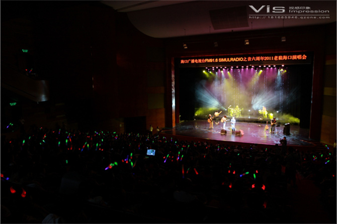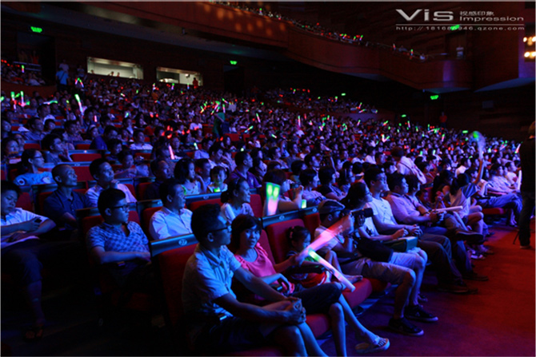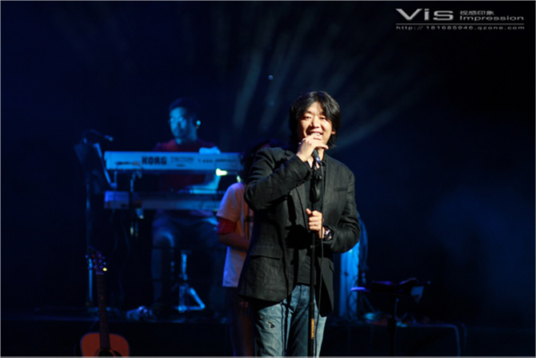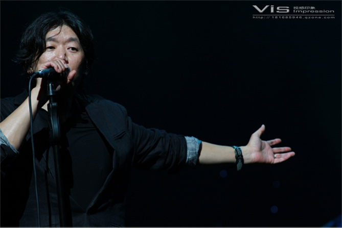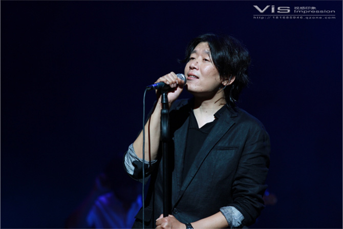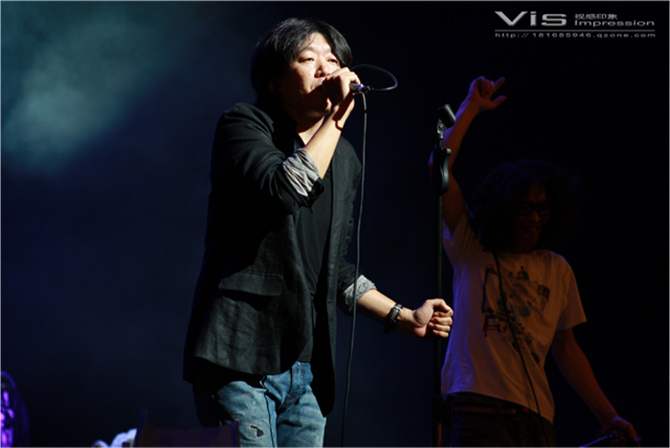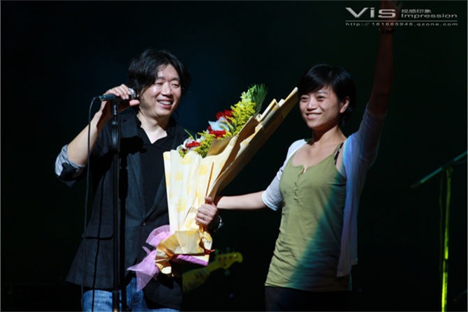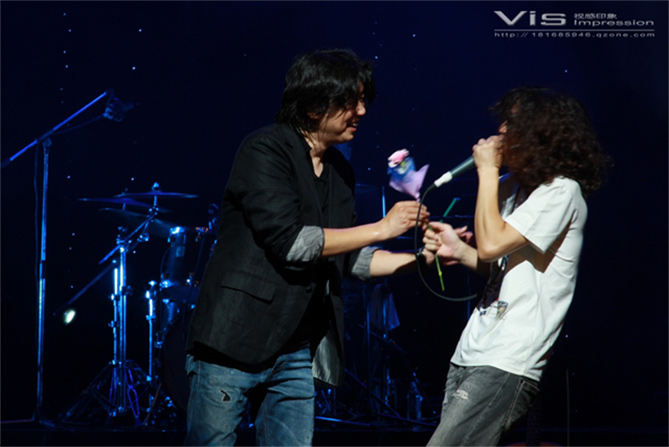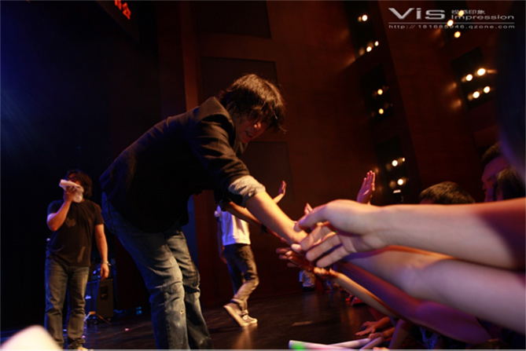
梦想之音六周年
2011老狼“同桌的你”海口演唱会 2011年9月16日晚上8点，2011老狼全国巡回演唱会海口站，在海南省歌舞剧院隆重上演，1000多名现场观众和老狼一起高唱《同桌的你》、《睡在我上铺的兄弟》等脍炙人口、广为流传的经典作品，一起重温了校园时代，一同“青春无悔”。SIMULRADIO FM91.6音乐电台用华丽的舞台、震撼的音乐为椰城歌迷带来了一场音乐饕餮盛宴，与现场的嘉宾与观众一起感受了一场充满回味的音乐会。
演唱会现场，老狼带着专属乐团让现场观众深深沉浸在经典民谣中整整120分钟，集聚老狼出道17年间各阶段的代表作品与流行曲目，该演出由中国优秀流行音乐策划团队编排制作，内地、台湾两地顶级乐手加盟助阵，自09年在深圳音乐厅首演成功，迅速引起各地演出商的高度问询，无论是演出市场口碑与媒体评价，均获不俗反响。
本次演唱会有SIMULRADIO FM91.6音乐电台主办，SIMULRADIO拒绝CD，只要现场的音乐理念，在晚会上，表现的淋漓尽致，使整个歌舞剧院变成了音乐的海洋。据现场采访，现场观众当中既有SIMULRADIO的铁杆听众，也有热衷于校园民谣的歌迷，一位铁杆听众王先生表示，“我是从SIMULRADIO开播那天就一直喜欢听的老听众，一晃已经六年时间过去了，只要SIMULRADIO有什么活动，我一定是第一个报名参加的。而且老狼的歌真的是一个年代共同的回忆，今天在现场我也从头跟着一直唱到结束，很多歌曲都碰触到自己的心底” 。
演出结束后，许多观众还不愿离开，都还深深沉浸在音乐带给自己的回味当中。至此，SIMULRADIO FM91.6音乐电台六周年庆典老狼演唱会已经完美呈现在了观众朋友面前。
SIMULRADIO FM91.6音乐电台，自2005年10月13日开播初始，就迅速占领市场，并在极短时间内，成为海南岛收听率与市场占有率最高的电台。在这六年来，SIMULRADIO FM91.6音乐电台不断自我突破，一次次的理念革新，成功打造海南岛最受听众喜爱的音乐电台，属于听众自己的音乐城堡。跟时间、跟昨天、跟自己竞争，是SIMULRADIO FM91.6音乐电台的信念。与企业同步，与时间同步，也是SIMULRADIO音乐电台的经营哲学。反对传统，打破常规，拒绝保持电台神秘感，走在广播界前端的SIMULRADIO音乐电台在各个领域都散发着时尚潮流气息。我们相信SIMULRADIO音乐电台在今后的日中，一定会为海南的听众朋友奉献更多更好的广播节目，打造海南广播音乐第一的绿色品牌。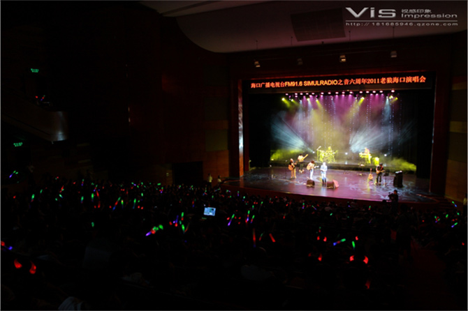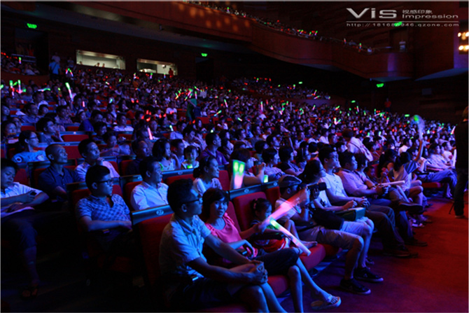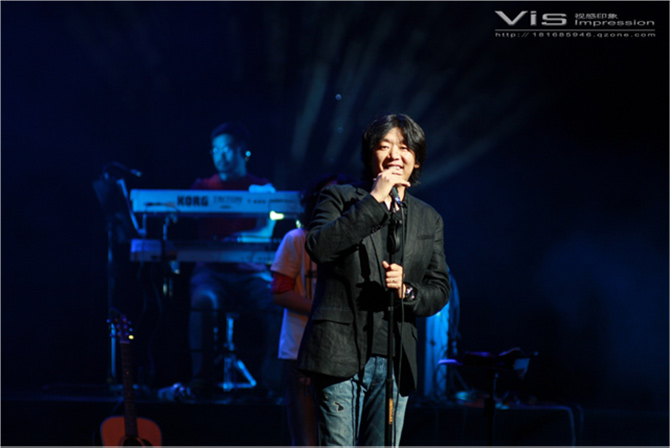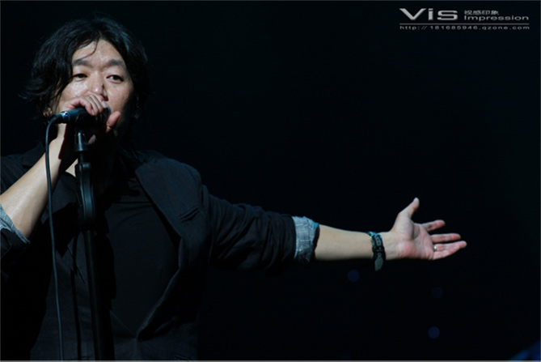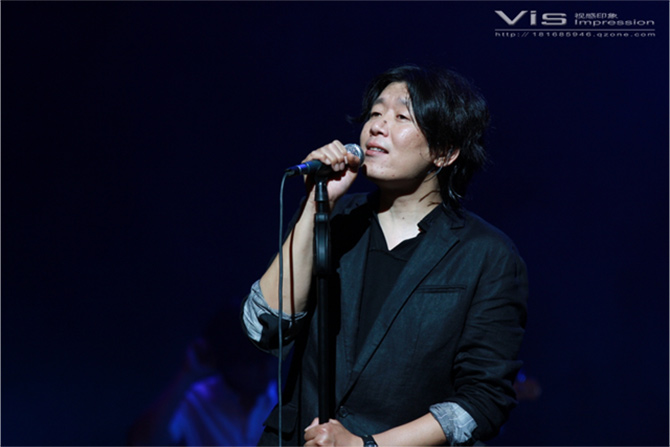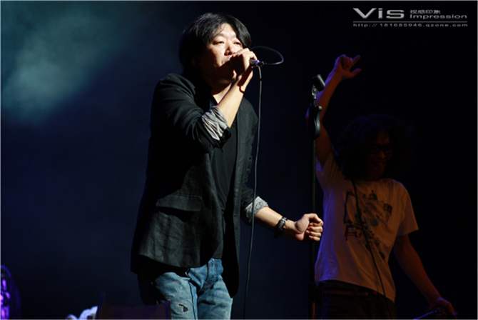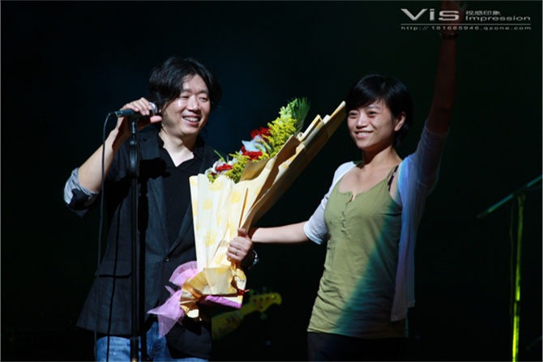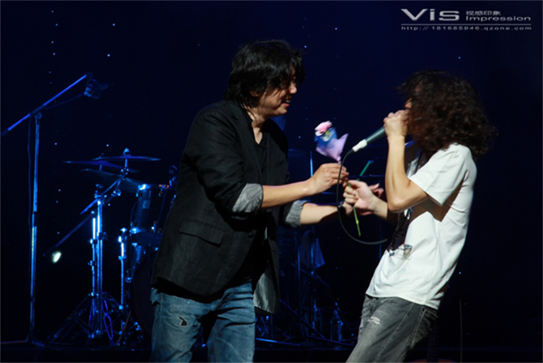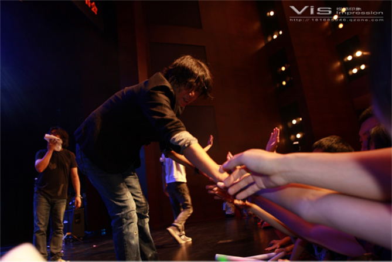